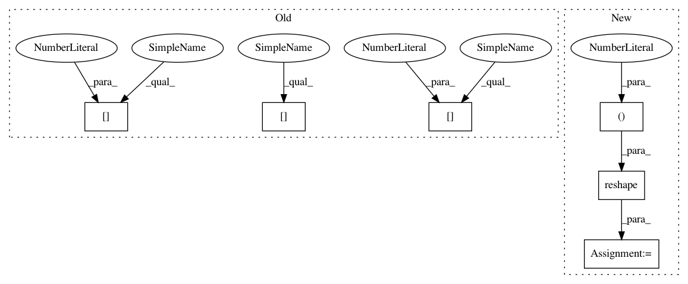

672a873ffb344dfa030103cad69bdbc948184e8e,keras/backend/tensorflow_backend.py,,bias_add,#Any#Any#Any#,3929
Before Change
elif ndim(x) == 3:
if data_format == "channels_first":
if len(bias_shape) == 1:
x += reshape(bias, (1, bias_shape[0], 1))
else:
x += reshape(bias, (1, bias_shape[1], bias_shape[0]))
elif data_format == "channels_last":
if len(bias_shape) == 1:
x += reshape(bias, (1, 1, bias_shape[0]))
After Change
new_shape = (1, 1, bias_shape[0])
else:
new_shape = (1,) + bias_shape
new_shape = transpose_shape(new_shape, data_format, spatial_axes=(1,))
x += reshape(bias, new_shape)
else:
x = tf.nn.bias_add(x, bias)
return x
In pattern: SUPERPATTERN
Frequency: 3
Non-data size: 6
Instances
Project Name: keras-team/keras
Commit Name: 672a873ffb344dfa030103cad69bdbc948184e8e
Time: 2018-08-08
Author: gabrieldemarmiesse@gmail.com
File Name: keras/backend/tensorflow_backend.py
Class Name:
Method Name: bias_add
Project Name: streamlit/streamlit
Commit Name: a9ec1a8df7bbfd99d1e166fe5d72bafcc23c915b
Time: 2018-02-03
Author: adrien.g.treuille@gmail.com
File Name: periodic_table.py
Class Name:
Method Name:
Project Name: keras-team/keras
Commit Name: 672a873ffb344dfa030103cad69bdbc948184e8e
Time: 2018-08-08
Author: gabrieldemarmiesse@gmail.com
File Name: keras/backend/tensorflow_backend.py
Class Name:
Method Name: bias_add
Project Name: keras-team/keras
Commit Name: 359e7627b46e850688c95cf6d1de48b77f9df901
Time: 2018-08-08
Author: gabrieldemarmiesse@gmail.com
File Name: keras/backend/tensorflow_backend.py
Class Name:
Method Name: bias_add